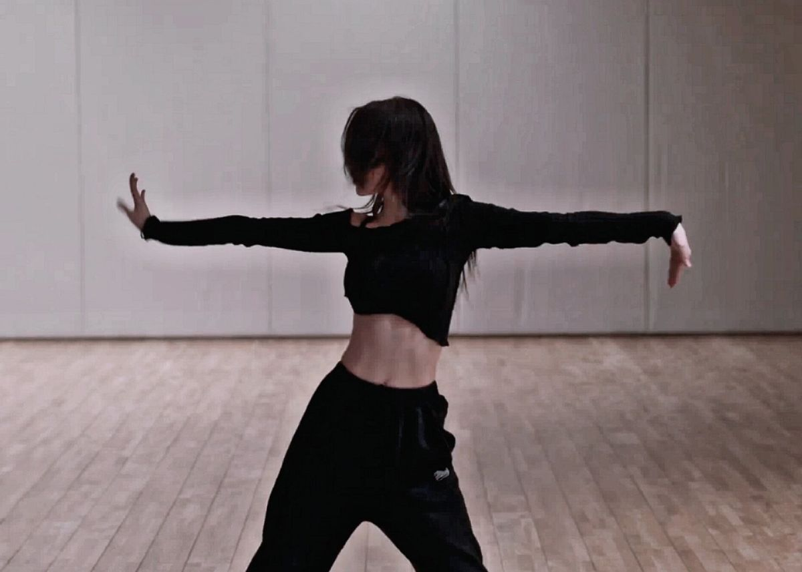

Ξεκίνησα τον χορό από πολύ μικρή ηλικία, αρχίζοντας με το μπαλέτο. Για αρκετά χρόνια παρακολουθούσα μαθήματα και ήταν μια δραστηριότητα που με γέμιζε χαρά και ενθουσιασμό. Κάποια στιγμή όμως σταμάτησα, γιατί πίστευα πως ήταν πολύ απαιτητικό για μένα και ότι ήμουν ακόμη πολύ μικρή για να συνεχίσω. Παρ’ όλα αυτά, ο χορός έμεινε πάντα μέσα μου και εξακολουθεί να είναι ένα από τα πιο αγαπημένα μου hobbies.
